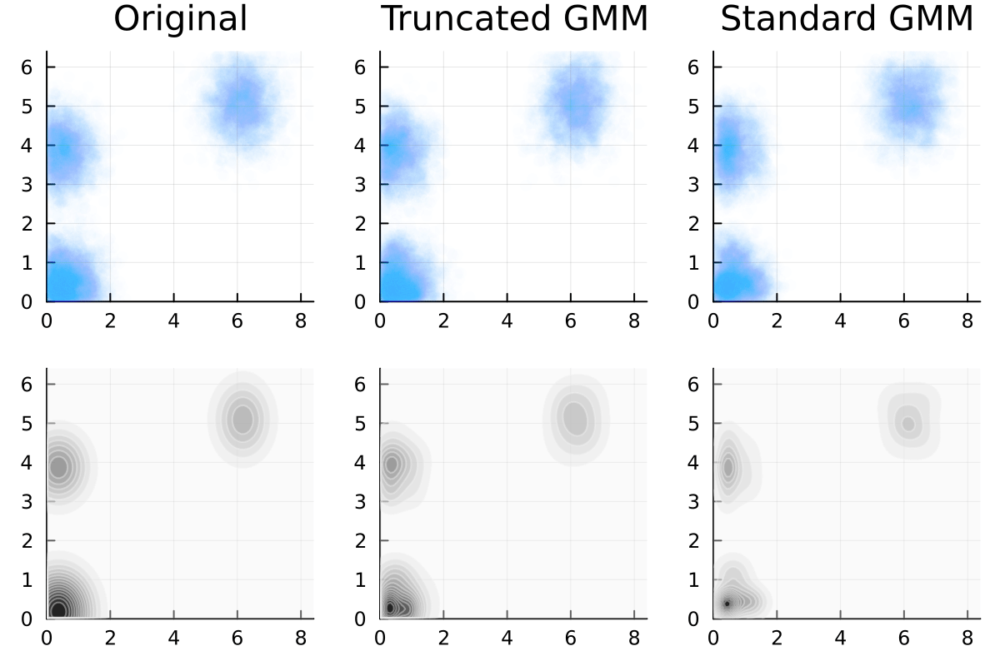

Truncated Gaussian Mixtures
This package allows one to fit a gaussian mixture model using Truncated Gaussian Kernels. Works only for Gaussians truncated to lie inside some box.
The algorithm is adapted from this paper by Lee & Scott, as well as the algorithm for computing the first two moments of a truncated gaussian with full covariances.
Quick Usage
The quickest no-frills way to use TruncatedGaussianMixtures is by using the fit_gmm method by specifying your data as a DataFrame.
using TruncatedGaussianMixtures
using DataFrames, Distributions
# Mock Data: Generate a mixture of truncated gaussian mixtures
μ1 = [0.2, 0.7];
Σ1 = [0.05 0.04;0.04 0.05];
μ2 = [0.1, 0.2];
Σ2 = [0.05 -0.02;-0.02 0.03];
a = [0.0, 0.0]; b = [1.0, 1.0] # Lower and upper limits of the bounding box
dist = MixtureModel(
[TruncatedMvNormal(MvNormal(μ1, Σ1), a, b),
TruncatedMvNormal(MvNormal(μ2, Σ2), a, b)],
[0.3, 0.7]
)
df = DataFrame(rand(dist, 80_000)', [:x, :y])
# Lets fit a 2 component Truncated Gaussian Mixture model
# with general covariance matrices, and also show a progress bar
gmm = fit_gmm(df, 2, a, b; cov=:full, tol=1e-5, progress=true);Advantages
As we can see the standard Gaussian Mixture Model has its kernels avoid the edges. A truncated kernel reproduces the probability distributions at the edges as well.


Usage
# Create the fit
EM = fit_gmm(X, 2, a, b; # data, n_components, lower, upper
cov=:diag, # Choose between :diag and :full for diagonal or full covariances
block_structure=[1,1], # Specify the blocks that can be correlated with each other
# [a,a] means that the first and second dimension are in the same block
# Only relavent if one uses cov=:full
tol=1e-2, # tolerance for the stopping criteria.
MAX_REPS=100, # Maximum number of EM update steps
verbose=false, # Verbose output usefull for debugging
progress=true, # Gives a progress bar to show the progress of the fit
responsibilities=false, # Returns the EM object as opposed to Distributions.jl object
block_structure=false) # One can specify a block structure for the covariances